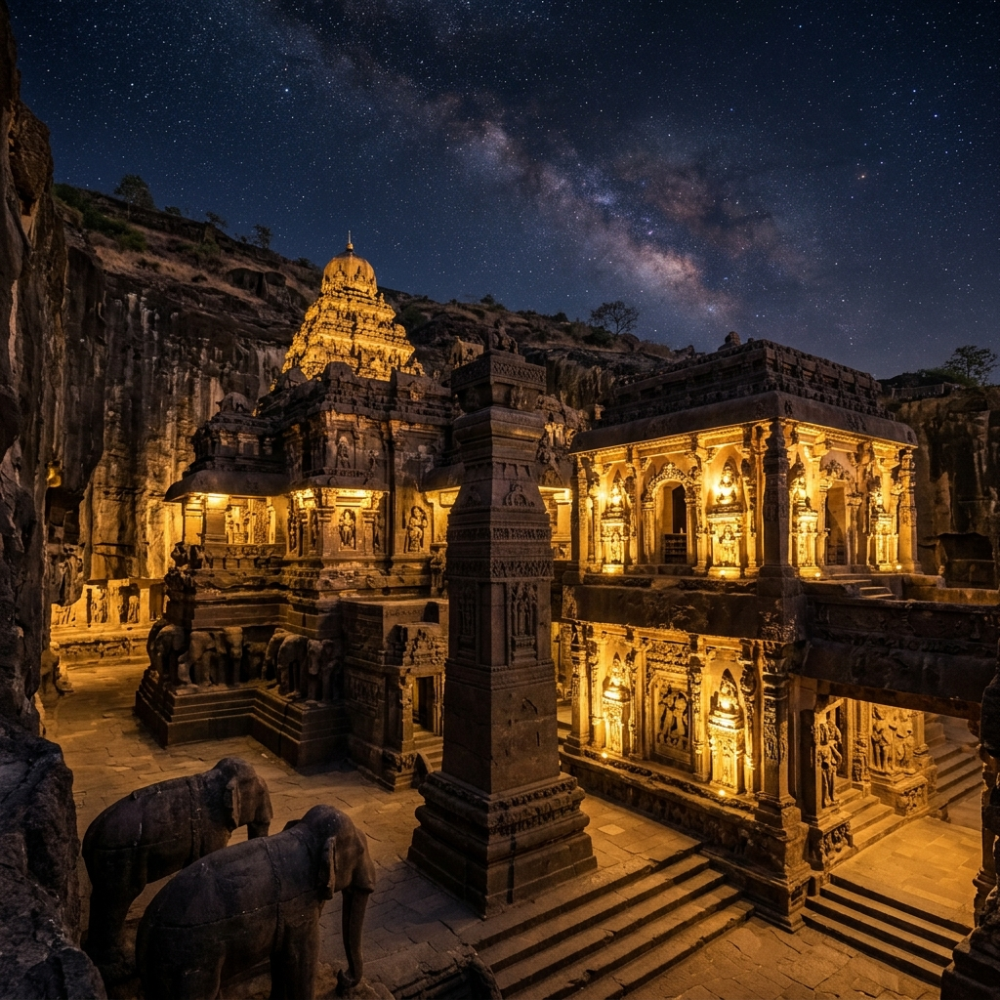

Kanhadadeva
Chauhan ruler of Jalore (r. c. 1292–1311)The defiant ruler of Javalipura who refused to submit to Alauddin Khalji and fell fighting for his fort.
At the golden fort of Swarnagiri, a small Chauhan kingdom made its stand against the might of Alauddin Khalji's Delhi Sultanate. Follow the siege that ended a dynasty — and the epic poem that kept its memory alive.
The Battle of Jalore (1311 CE) was the final clash between the expanding Delhi Sultanate and the Chauhan (Chahamana) rulers of Jalore in present-day Rajasthan. Jalore's hill-fort, Swarnagiri — the "golden mount" — had been held by the Chauhans since Kirtipala seized it from the Paramaras in 1181, and by the early 14th century it was one of the last independent Rajput strongholds in Marwar.
After Alauddin Khalji had stormed Ranthambore (1301) and Chittor (1303) and conquered neighbouring Siwana, Jalore stood exposed. Kanhadadeva, the ruler who had run the kingdom with his father Samantasimha, refused to bow to the Sultan. His defiance — remembered in the 15th-century epic Kanhadade Prabandha — turned a provincial siege into one of medieval Rajasthan's most celebrated stories of resistance.
The Sultanate's march into Rajputana gradually encircled Jalore over a decade.
Ranthambore fell in 1301, Chittor in 1303, and Siwana in 1310. With Gujarat, Malwa, Mewar and Marwar subdued, independent Jalore became a target Alauddin could not ignore.
Kanhadadeva's forces repeatedly raided Sultanate columns. His generals Jaita and Mahipa defeated a Delhi contingent, recovering plunder and freeing captives taken in the raids of Bhinmal and Satyapura.
Perched on the hill of Swarnagiri, Jalore Fort had already withstood a siege by Iltutmish in 1228–29, when Udayasimha had forced the Sultan to withdraw.
The Kanhadade Prabandha weaves a legend of Sultan Alauddin's daughter Piroja falling in love with prince Viramadeva. The refusal of the match, the epic claims, was the spark for the invasion.
From a Chauhan victory at the fort's gates to the last coronation on its walls.
Kirtipala of the Naddula Chauhans seizes Jalore Fort (Suvarnagiri), founding the Sonagara/Chauhan branch that will rule for 130 years.
Udayasimha, the dynasty's most powerful ruler, resists the siege of the Delhi Sultan Iltutmish, who eventually withdraws.
Kanhadadeva rules, first with his father Samantasimha and then alone, holding the Sultanate at arm's length.
Alauddin Khalji takes Ranthambore, Chittor and Siwana. Jalore's skirmishes with Delhi's raiding columns multiply.
Alauddin sends his ablest general, Malik Kamaluddin Gurg. Seven days of assaults are thrown back by sorties led by Viramadeva and Maladeva; a thunderstorm forces the first besiegers to retreat.
The traitor Bika leads Kamaluddin's men through an unguarded entrance. Viramadeva is crowned king; the women of the fort enter the jauhar fires while the defenders die fighting. Kanhadadeva and Viramadeva are killed — the Chauhan dynasty of Jalore is no more.
Commanders, kings and chroniclers who shaped — and preserved — the story of Jalore.
The defiant ruler of Javalipura who refused to submit to Alauddin Khalji and fell fighting for his fort.
Kanhadadeva's son who led the counter-sorties, was crowned king in the final hours, and died 2½ days after his coronation.
Fought the invaders' advance at Vadi and led contingent attacks on alternate days to slow Kamaluddin's march.
The imperial conqueror of the Khalji Sultanate who, having subdued Ranthambore and Chittor, ordered Jalore's reduction.
One of Alauddin's best generals, dispatched in 1311 to take Jalore after earlier attempts failed; he finally breached the fort.
The poet-chronicler whose epic turned the siege of Jalore into Rajasthan's lasting legend of valour and sacrifice.
The Delhi Sultanate took Jalore Fort in 1311. Kanhadadeva and Viramadeva were killed in the final fighting, and thousands of defenders and their feudal chiefs fell with them. The women of the fort — including Kanhadadeva's queens — died in the jauhar rather than be captured.
Medieval sources differ sharply on the scale and story of the siege. The Kanhadade Prabandha speaks of repeated breaches beaten back, 1584 jauhar fires, and a dynasty choosing death over surrender. Persian histories instead describe a pragmatic campaign of annexation. Historians caution that the romantic details — the princess Piroja's love, the head that turned away — are legend, not record.
What is certain is the outcome: Alauddin Khalji's campaign ended the independent rule of Jalore, completing the Sultanate's hold over eastern and central Rajputana, and the memory of the fort's fall became a cornerstone of Rajput honour and resistance.
The fall of a small desert kingdom outlived the Sultanate that conquered it.
Composed by the poet Padmanabha around 1455, this epic remains the principal Rajput account of the siege and the chief vehicle of Jalore's legend.
Jalore Fort still crowns its hill, bearing temples within its walls and the layers of a history that begins long before the battle.
Jalore joined Chittor as a byword for Rajput resistance — where women entered the fire so men could die fighting.
The 17th-century chronicle of Munhot Nainsi retold the siege, keeping the memory of Kanhadadeva alive in Marwar's courtly histories.
The resistance at Jalore became part of the broader narrative of Rajput defiance against the Delhi Sultanate, alongside Ranthambore and Chittor.
The "Sonagara" branch of the Chauhans — descendants of the Jalore line — carried the dynasty's name forward in Marwar and beyond.
Imagery of the desert forts and cities that frame the world of the Battle of Jalore.


